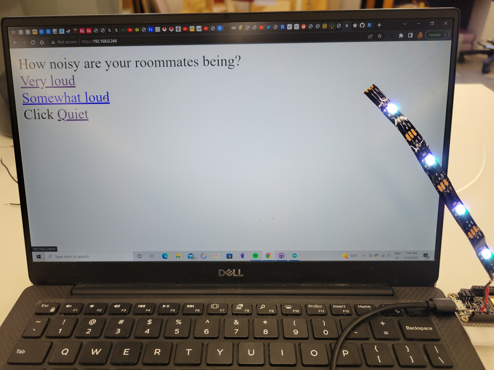
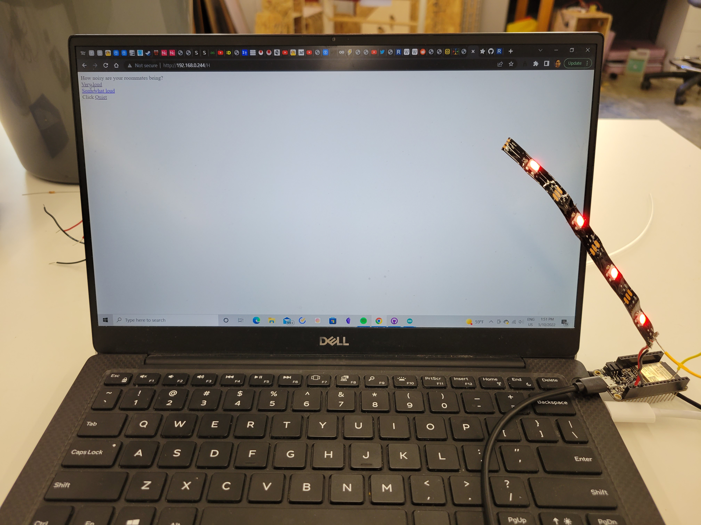
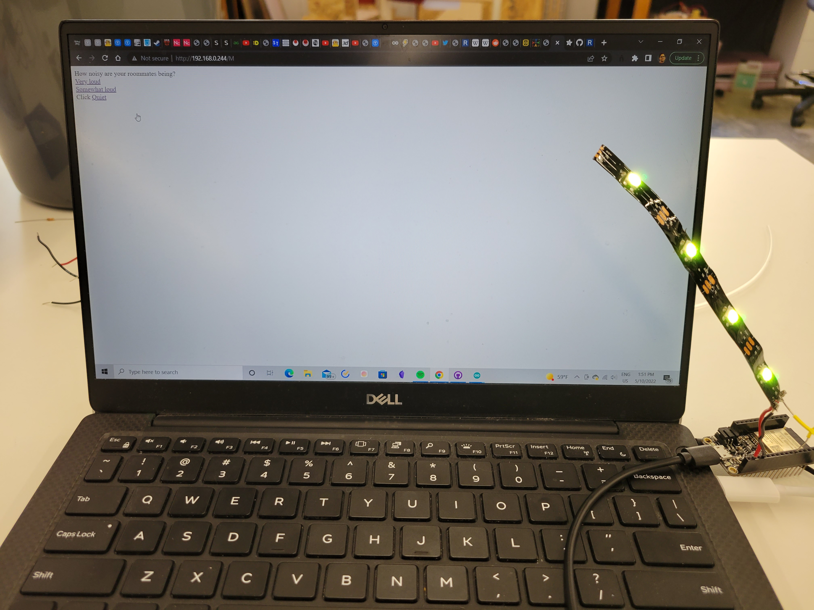
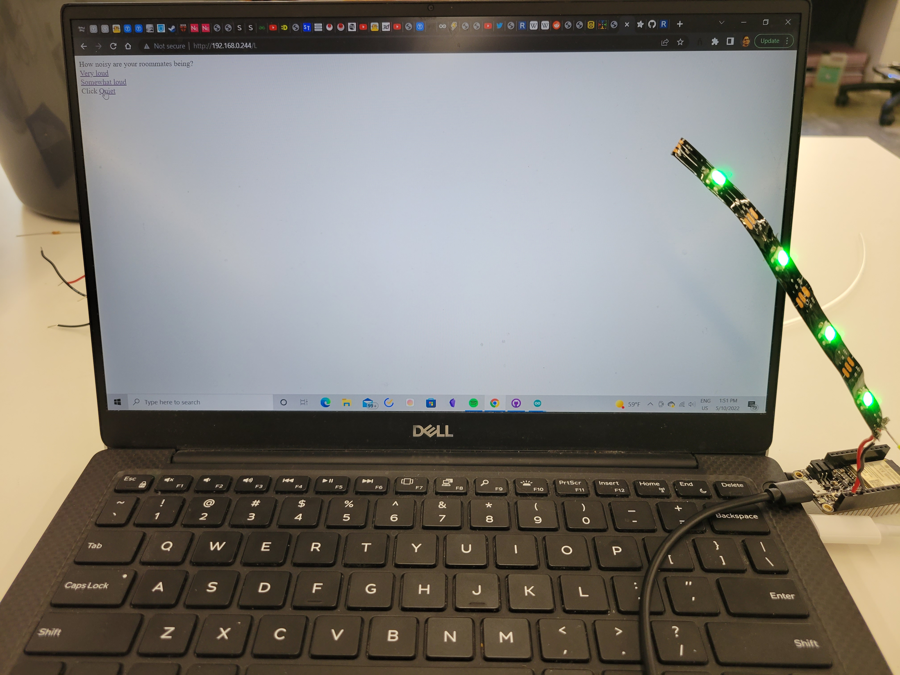

<div class="container-fluid">
### Week 1: Radio, WiFi, Bluetooth (IoT)
Here is an image:
This week I decided to use the Internet of Things to solve a very pressing issue in my own life. My roommates frequently host large social gatherings in our common room, and these gatherings tend to be quite loud. Normally I appreciate the ability to socialize without leaving home, but every now and again I have to go to bed and can't sleep because all the people in our common room are too loud.
Instead of picking the obvious option and having a conversation with my roommates about it, it would be much more funny to be passive-aggressive about it and use the Internet of Things to create a noise indicator, which would tell my roommates that they're being too loud.
In technical terms, I want to control a LED strip with a LAN server. The LAN server would display a webpage in which I could indicate how loud my roommates are being ("not loud", "somewhat loud," and "very loud"), and the LED strip would change colors based on that.
To make this, I began by creating a simple WiFi LAN server on the ESP32 Huzzah. This program also initializes a strip of four LEDs using the FastLED library. The server has three GET links, each of which corresponds to a volume level. Once clicked, each changes the colors of the previously-initialized LEDs (Very High is red, Medium is yellow, and Quiet is green).
The code is below:
```
/*
WiFi Web Server LED Blink
A simple web server that lets you blink an LED via the web.
This sketch will print the IP address of your WiFi Shield (once connected)
to the Serial monitor. From there, you can open that address in a web browser
to turn on and off the LED on pin 5.
If the IP address of your shield is yourAddress:
http://yourAddress/H turns the LED on
http://yourAddress/L turns it off
This example is written for a network using WPA encryption. For
WEP or WPA, change the Wifi.begin() call accordingly.
Circuit:
* WiFi shield attached
* LED attached to pin 5
created for arduino 25 Nov 2012
by Tom Igoe
ported for sparkfun esp32
31.01.2017 by Jan Hendrik Berlin
*/
#include <WiFi.h>
#include <FastLED.h>
const char* ssid = "MAKERSPACE";
const char* password = "12345678";
WiFiServer server(80);
#define LED_PIN 5
#define NUM_LEDS 4
CRGB leds[NUM_LEDS];
void setup()
{
Serial.begin(115200);
delay(10);
// We start by connecting to a WiFi network
Serial.println();
Serial.println();
Serial.print("Connecting to ");
Serial.println(ssid);
WiFi.begin(ssid, password);
while (WiFi.status() != WL_CONNECTED) {
delay(500);
Serial.print(".");
}
Serial.println("");
Serial.println("WiFi connected.");
Serial.println("IP address: ");
Serial.println(WiFi.localIP());
server.begin();
FastLED.addLeds<WS2812, LED_PIN, GRB>(leds, NUM_LEDS);
leds[0] = CRGB(255, 255, 255);
FastLED.show();
leds[1] = CRGB(255, 255, 255);
FastLED.show();
leds[2] = CRGB(255, 255, 255);
FastLED.show();
leds[3] = CRGB(255, 255, 255);
FastLED.show();
}
int value = 0;
void loop(){
WiFiClient client = server.available(); // listen for incoming clients
if (client) { // if you get a client,
Serial.println("New Client."); // print a message out the serial port
String currentLine = ""; // make a String to hold incoming data from the client
while (client.connected()) { // loop while the client's connected
if (client.available()) { // if there's bytes to read from the client,
char c = client.read(); // read a byte, then
Serial.write(c); // print it out the serial monitor
if (c == '\n') { // if the byte is a newline character
// if the current line is blank, you got two newline characters in a row.
// that's the end of the client HTTP request, so send a response:
if (currentLine.length() == 0) {
// HTTP headers always start with a response code (e.g. HTTP/1.1 200 OK)
// and a content-type so the client knows what's coming, then a blank line:
client.println("HTTP/1.1 200 OK");
client.println("Content-type:text/html");
client.println();
// the content of the HTTP response follows the header:
client.print("How noisy are your roommates being?<br>");
client.print("<a href=\"/H\">Very loud</a><br>");
client.print("<a href=\"/M\">Somewhat loud</a><br>");
client.print("Click <a href=\"/L\">Quiet</a><br>");
// The HTTP response ends with another blank line:
client.println();
// break out of the while loop:
break;
} else { // if you got a newline, then clear currentLine:
currentLine = "";
}
} else if (c != '\r') { // if you got anything else but a carriage return character,
currentLine += c; // add it to the end of the currentLine
}
// Check to see if the client request was "GET /H" or "GET /L":
if (currentLine.endsWith("GET /H")) {
leds[0] = CRGB(255, 0, 0);
FastLED.show();
leds[1] = CRGB(255, 0, 0);
FastLED.show();
leds[2] = CRGB(255, 0, 0);
FastLED.show();
leds[3] = CRGB(255, 0, 0);
FastLED.show();
}
if (currentLine.endsWith("GET /M")) {
leds[0] = CRGB(255, 255, 0);
FastLED.show();
leds[1] = CRGB(255, 255, 0);
FastLED.show();
leds[2] = CRGB(255, 255, 0);
FastLED.show();
leds[3] = CRGB(255, 255, 0);
FastLED.show();
}
if (currentLine.endsWith("GET /L")) {
leds[0] = CRGB(0, 255, 0);
FastLED.show();
leds[1] = CRGB(0, 255, 0);
FastLED.show();
leds[2] = CRGB(0, 255, 0);
FastLED.show();
leds[3] = CRGB(0, 255, 0);
FastLED.show();
}
}
}
// close the connection:
client.stop();
Serial.println("Client Disconnected.");
}
}
```
Below is a demonstration.
On initial server load up:

On clicking the "Too much noise" option:

On clicking the "Moderate noise" option:

On clicking the "Quiet" option:
